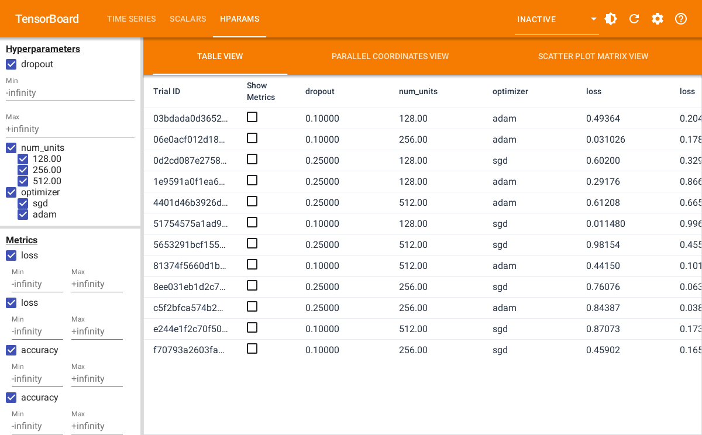

Hyperparameter tuning is a important step in machine learning
problems. tfevents has the ability to log hyperparameter
values and configurations so they can be visualized with
TensorBoard.
In this tutorial we show the recommended steps to correctly log hyperparameter runing data and visualize it in TensorBoard. We will abstract away the model we are training and the approach described here can work with any machine learning framework.
Configuring the experiment
The first step to use tfevents to log hyperparameter
tuning experiments is to log a hyperparameter configuration using the
log_hparams_config() function.
In order to do it, we need to first define the set of hyperparameters that we are going to experiment with along with their domains. We also define the set of metrics that we want to be displayed in the HParams dashboard.
Suppose that we want to tune a neural network that has the following
hyperparameters: num_units, dropout and
optimizer. And that we want to observe the training and
validation loss as well as the accuracy.
hparams <- list(
hparams_hparam("num_units", domain = c(128, 256, 512)),
hparams_hparam("dropout", domain = c(min_value = 0.1, max_value = 0.4)),
hparams_hparam("optimizer", domain = c("sgd", "adam"))
)
metrics <- list(
hparams_metric("loss", group = "train"),
hparams_metric("loss", group = "valid"),
hparams_metric("accuracy", group = "train"),
hparams_metric("accuracy", group = "valid")
)We can now choose a logdir and log the hyperparameter configurations:
temp <- tempfile("logdir")
local_logdir(temp)
log_hparams_config(hparams, metrics)We have now logged the experiment configuration, we can now proceed to loging runs of this experiment.
Logging runs
We are not actually going to train any model in this tutorial, but we will define a function that does log some metrics, like if it was training something. This function takes the hyperparameter values, and they should be used to configure how training happens.
train <- function(num_units, dropout, optimizer) {
# each run will have its own logdir.
# this modifies the logdir during the execution of this function
epochs <- 10
for (i in seq_len(epochs)) {
# training code would go here
log_event(
train = list(loss = runif(1), accuracy = runif(1)),
valid = list(loss = runif(1), accuracy = runif(1)),
)
}
}We now writer a wraper function that takes the hyperparameter values and:
- Creates a random logdir name for the run
- Temporarily modifies the default logdir, so scalars and etc for each run are separated in the file system.
- Log the set of hyperparameters that is going to be used.
- Runs the
trainfunction that we defined earlier.
run_train <- function(root_logdir, num_units, dropout, optimizer) {
# create a random logdir name for the run. It should be a child directory
# of root_logdir
logdir <- file.path(
root_logdir,
paste(sample(letters, size = 15, replace = TRUE), collapse = "")
)
# modifies the logdir during the execution of run_train
local_logdir(logdir)
# before running the actual training we log the set of hyperparameters
# that are used.
log_hparams(
num_units = num_units,
dropout = dropout,
optimizer = optimizer
)
train(num_units, dropout, optimizer)
}We can now use run_train to run training for multiple
sets of hyperparameters.
for (num_units in c(128, 256, 512)) {
for (dropout in c(0.1, 0.25)) {
for (optimizer in c("adam", "sgd")) {
run_train(temp, num_units, dropout, optimizer)
}
}
}You can see that the root logdir that we are using as
temp will be filled with event files.
fs::dir_tree(temp)
#> /tmp/Rtmp7W1iGA/logdir1be277c6d55f
#> ├── bzjrestnbuefsqx
#> │ ├── events.out.tfevents.1719493365.v2
#> │ ├── train
#> │ │ └── events.out.tfevents.1719493365.v2
#> │ └── valid
#> │ └── events.out.tfevents.1719493365.v2
#> ├── events.out.tfevents.1719493364.v2
#> ├── faamrewkadgwxbh
#> │ ├── events.out.tfevents.1719493365.v2
#> │ ├── train
#> │ │ └── events.out.tfevents.1719493365.v2
#> │ └── valid
#> │ └── events.out.tfevents.1719493365.v2
#> ├── fmzbbiaqaayrcpi
#> │ ├── events.out.tfevents.1719493366.v2
#> │ ├── train
#> │ │ └── events.out.tfevents.1719493366.v2
#> │ └── valid
#> │ └── events.out.tfevents.1719493366.v2
#> ├── gkjhvqltorlvuzj
#> │ ├── events.out.tfevents.1719493365.v2
#> │ ├── train
#> │ │ └── events.out.tfevents.1719493365.v2
#> │ └── valid
#> │ └── events.out.tfevents.1719493365.v2
#> ├── ipjjkurjxbtellw
#> │ ├── events.out.tfevents.1719493365.v2
#> │ ├── train
#> │ │ └── events.out.tfevents.1719493365.v2
#> │ └── valid
#> │ └── events.out.tfevents.1719493365.v2
#> ├── mnwerlwzlgjzrdp
#> │ ├── events.out.tfevents.1719493366.v2
#> │ ├── train
#> │ │ └── events.out.tfevents.1719493366.v2
#> │ └── valid
#> │ └── events.out.tfevents.1719493366.v2
#> ├── mwlefoodfieexom
#> │ ├── events.out.tfevents.1719493365.v2
#> │ ├── train
#> │ │ └── events.out.tfevents.1719493365.v2
#> │ └── valid
#> │ └── events.out.tfevents.1719493365.v2
#> ├── qeoelfyoqaitrxp
#> │ ├── events.out.tfevents.1719493366.v2
#> │ ├── train
#> │ │ └── events.out.tfevents.1719493366.v2
#> │ └── valid
#> │ └── events.out.tfevents.1719493366.v2
#> ├── sijyaxpvjfhcepy
#> │ ├── events.out.tfevents.1719493366.v2
#> │ ├── train
#> │ │ └── events.out.tfevents.1719493366.v2
#> │ └── valid
#> │ └── events.out.tfevents.1719493366.v2
#> ├── snayorehalspkzc
#> │ ├── events.out.tfevents.1719493365.v2
#> │ ├── train
#> │ │ └── events.out.tfevents.1719493365.v2
#> │ └── valid
#> │ └── events.out.tfevents.1719493365.v2
#> ├── weytkovhgshlcph
#> │ ├── events.out.tfevents.1719493365.v2
#> │ ├── train
#> │ │ └── events.out.tfevents.1719493365.v2
#> │ └── valid
#> │ └── events.out.tfevents.1719493365.v2
#> └── yiqlnrsjmqnmkje
#> ├── events.out.tfevents.1719493366.v2
#> ├── train
#> │ └── events.out.tfevents.1719493366.v2
#> └── valid
#> └── events.out.tfevents.1719493366.v2Finally, we can visualize the experiment results in TensorBoard:
tensorflow::tensorboard(temp, port = 6060)
#> Started TensorBoard at http://127.0.0.1:6060The screenshot below shows the table view in the HParams dashboard in TensorBoard.

TensorBoard also provides visualizing the results in a parallel coordinates plot and as a scatter plot.